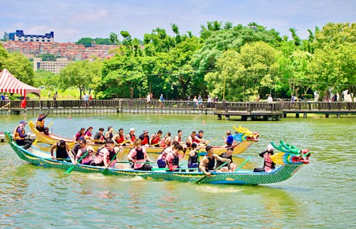
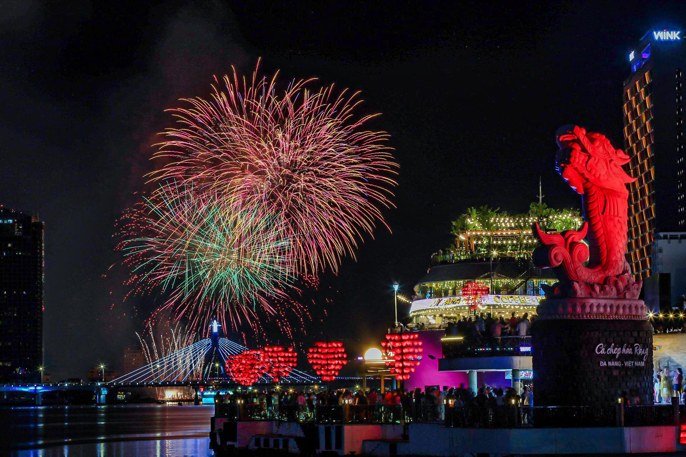
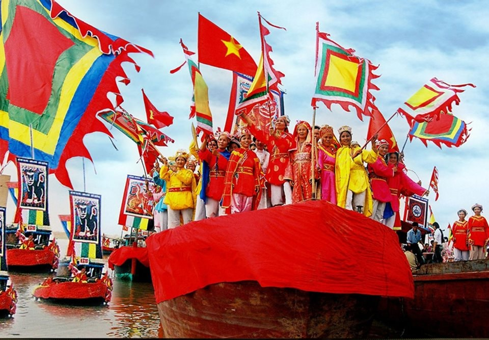

|
|
| Giá vé | Du lịch | Ẩm thực | Văn hóa | Giới thiệu |
Văn Hóa Đà Nẵng
Giới thiệu về văn hóa Đà Nẵng
Đà Nẵng là thành phố có nền văn hóa đa dạng, kết hợp hài hòa giữa truyền thống và hiện đại. Nơi đây nổi tiếng với các lễ hội đặc sắc như Lễ hội Pháo hoa Quốc tế Đà Nẵng và các lễ hội dân gian truyền thống. Bên cạnh đó, thành phố còn có đời sống tín ngưỡng phong phú với nhiều tôn giáo cùng chung sống hòa hợp. Sự thân thiện, mến khách của người dân đã góp phần tạo nên nét đẹp văn hóa riêng, thu hút du khách trong và ngoài nước.
1.Lễ hội đua thuyền truyền thống

- Lễ hội đua thuyền truyền thống là một trong những sự kiện văn hóa đặc sắc của Đà Nẵng, thường diễn ra vào dịp Tết Nguyên Đán hoặc các ngày lễ lớn. Các đội đua thuyền đến từ nhiều địa phương khác nhau sẽ tranh tài trên sông Hàn, tạo nên không khí sôi động và hấp dẫn. Lễ hội không chỉ là dịp để tôn vinh truyền thống văn hóa mà còn là cơ hội để cộng đồng gắn kết và giao lưu.
- Diễn ra trên sông Hàn hoặc các khu vực ven biển.
- Các đội thuyền thi đấu sôi nổi, thể hiện tinh thần đoàn kết và sức mạnh tập thể.
- Là dịp để người dân tưởng nhớ nguồn gốc nghề sông nước và cầu mong mùa màng, cuộc sống thuận lợi.
2.Lễ hội Pháo hoa Quốc tế Đà Nẵng(DIFF)

-là một trong những hoạt động văn hóa, kéo dài từ cuối tháng 5 đến đầu tháng 7 hằng năm ,du lịch quy mô lớn và đặc sắc nhất Việt Nam. Được tổ chức thường niên bên bờ sông Hàn thơ mộng, DIFF quy tụ những đội pháo hoa hàng đầu thế giới đến tranh tài, biến bầu trời đêm Đà Nẵng thành những bức tranh nghệ thuật ánh sáng khổng lồ.
- DIFF không chỉ là dịp để tôn vinh nghệ thuật pháo hoa mà còn là cơ hội để quảng bá hình ảnh Đà Nẵng đến với du khách trong và ngoài nước, góp phần thúc đẩy phát triển du lịch và kinh tế địa phương.
3.Lễ hội Cần Ngư

Với người dân nơi đây, Cá Ông là vị thần hộ mệnh linh thiêng, luôn rẽ sóng cứu giúp tàu thuyền mỗi khi giông bão ập đến. Lễ hội ra đời để ngư dân "trả lễ" cho biển cả, đồng thời gửi gắm ước nguyện lớn nhất đời mình: Cầu cho mưa thuận gió hòa, sóng yên biển lặng, và những chuyến tàu trở về luôn đầy ắp tôm cá.
Ý nghĩa của lễ hội Cần Ngư:
Lễ hội Cần Ngư không chỉ là dịp để ngư dân tưởng nhớ và tôn vinh vị thần Cá Ông mà còn là cơ hội để gắn kết cộng đồng, giữ gìn và phát huy các giá trị văn hóa truyền thống của vùng biển.
- Thời gian: Diễn ra hằng năm từ ngày 14 đến ngày 16 tháng Giêng Âm lịch.
- Tổ chức tại các lăng thờ Cá Ông ven biển, trong đó quy mô lớn và nhộn nhịp nhất là tại quận Thanh Khê (dọc đường Nguyễn Tất Thành)..
Contact: tuyetmai121119@gmail.com